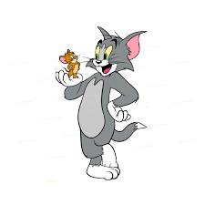

My favourite cartoon character is Tom from Tom and Jerry.
I like him because he is very funny and always tries to
catch Jerry, but never succeeds. He is also very
clever and always comes up with new plans to catch Jerry.

Tom does not always hunt alone. To finally outsmart Jerry,
he frequently teams up with the local alley cats.
However, despite their combined strength, numbers, and
elaborate traps, every single operation ends in utter
disaster for the cats.
Jerry is a small, brown mouse who lives in the walls of
the house. Even though Tom is much bigger and sets
complex traps, Jerry always stays one step ahead using
his speed, wit, and tiny size to escape every single time.
Despite his best efforts, Tom consistently fails to catch
Jerry. His plans are always foiled by Jerry's quick wit
and agility, leading to humorous situations and comedic
outcomes.